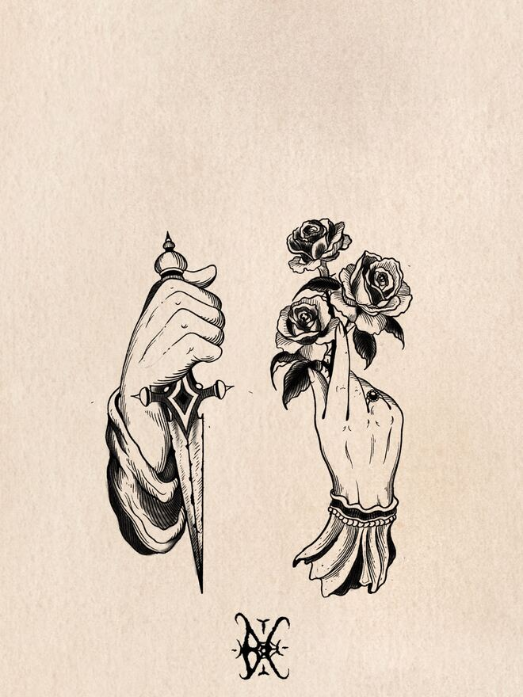
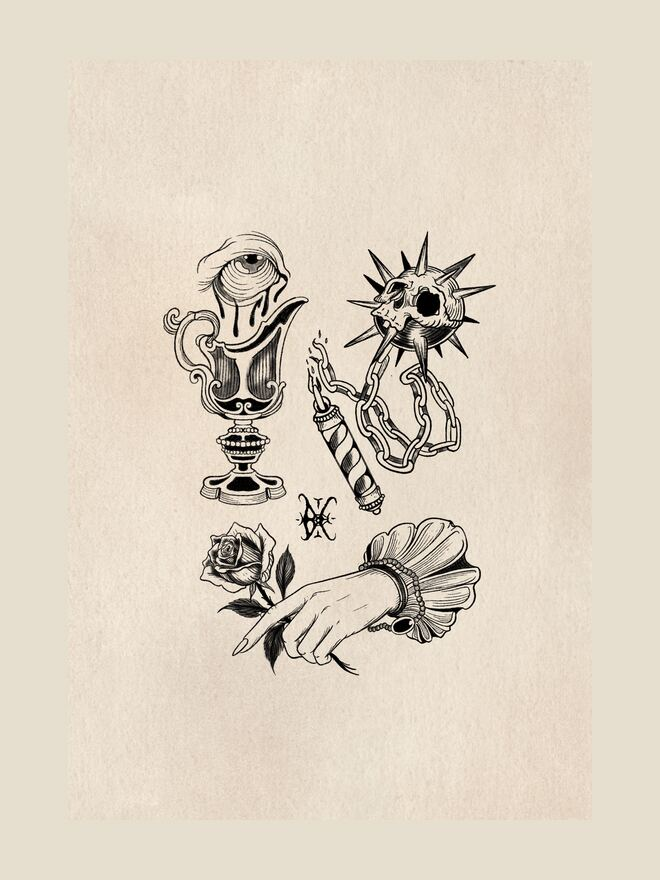

① Disponibles
Lames, mains et cierges. Chaque dessin est disponible une seule fois.
Lames, mains et cierges : ce qu'on garde quand la lumière baisse. Les dessins de l'automne sont pensés pour l'avant-bras et la cuisse, là où une pièce verticale peut respirer. Chaque dessin est disponible une seule fois, dans l'ordre des demandes.


② Déjà tatoués
Rayés jusqu'à la saison suivante. Ils ne seront pas refaits. Les pièces cicatrisées sont dans Tatouages.
③ Saisons passées
Consultables, mais plus disponibles.
Chaque saison a eu son thème et sa dizaine de dessins. Les catalogues passés restent consultables pour comprendre d'où viennent les pièces, mais aucun de leurs dessins n'est disponible. Certains motifs reviennent d'une saison à l'autre, jamais à l'identique.
④ Réserver
Écrire à Maxime avec le nom du dessin et l'emplacement. Réponse sous 48 heures ; l'acompte bloque le dessin.
Écrire à Maxime par e-mail ou sur Instagram avec le nom du dessin et l'emplacement souhaité. Réponse sous 48 heures avec une date et un prix. Le dessin est bloqué dès que l'acompte est versé ; il est déduit du prix final.
Si un flash vous plaît mais que vous le voulez ailleurs, ou un peu plus grand, dites-le : la plupart des dessins s'adaptent. Si vous voulez un dessin qui n'existe pas encore, c'est un projet personnalisé, décrit dans la section Infos.